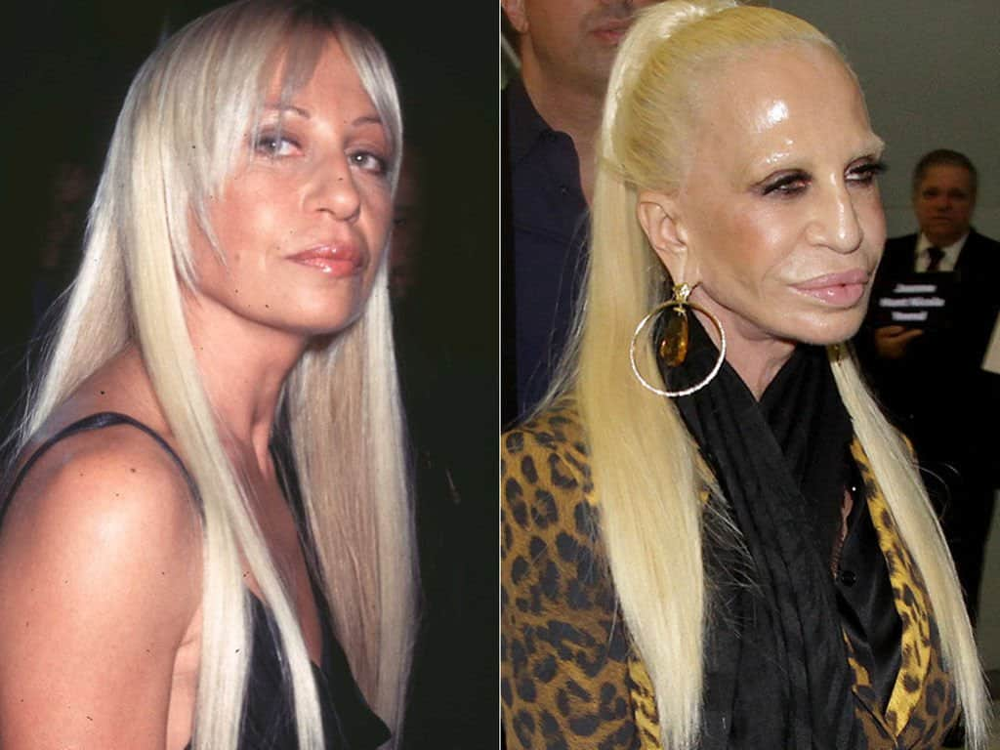

Shocking Examples of Celebrity Plastic Surgery Gone Wrong
by Shocking Examples of Celebrity Plastic Surgery Gone Wrong
Last Updated - 5 Days Ago

In rsquo now &;s day and age, it looks like just about everybody has had any sort of surgery. Popular variations are tummy tucks, breast implants, face lifts and rhinoplasty. You can't hear about it when things go well. That’s the idea. The outcomes are perfect and so polished that nobody even understands there was a physician there. Whenever you've got a situation of plastic surgery gone wrong, the opposite happens. It’s not clear, it’s impossible to dismiss. So let’therefore have a peek at a few of the most astounding illustrations from Plasticsurgerytalks.com’s new string Botched and let them become a lesson for you about what will go wrong when you’re looking perfect.
The Individual Doll
This ’s . But in this scenario, the guy behind the plastic was quite taken with his outcomes. On Botched! He's recognized as Justin, however, that could recall a title some other way when looking in a guy who's had 132 surgeries. An additional time, rsquo & that;s 132 surgery operations. It gets worse since when he seemed on the app, Justin was expecting to create 133.
This time that the surgery enthusiast was prepared to have abs of steel he had equipped. That’s the way because Justin appears as elements of an art endeavor at his operations, to place it. He's been working his way into a result, however, admits he’d alter all of it in a heartbeat while others followed suit and that he didn&rsquo.
The Uniboob
The body part in question this is likely, but it warrants because it's most likely the definition of plastic surgery gone 26, referencing. In this scenario a girl called Alicia went for a few of the kinds of operation we discussed before: breast feeding augmentation. In Alicia&rsquo case, she wanted to have breast implants because she had been feeling self-conscious following her son's arrival.
What followed has been the last thing she desired for her self-esteem: specifically. It seems like just what it is. Rather than 2 breast implants, then she finished up with you.
As stated by the star of this series, Dr. Dubrow, the implants were really so large that they could join and finally fuse into getting one. So while the surgery was a success, the wake gave her anything but benefits. Luckily, regardless of the extreme difficulty involved, Dr. Dubrow managed to salvage the operation and provide Alicia the torso she'd always desired.
No Nose
Regrettably for a girl called Michelle, she finished up in Dr. Dubrow’s office not due to the car accident she'd been in years before, but on account of the nose occupation --and following ones after it expected could conceal the initial harm. Everything started with a accident which, amongst other items collapsed rsquo & the lady;s nose. It smashed her nose flat against her face. As were the five she moved under to attempt to repair 21, the very first one was a separation.
She arrived using six nose projects under her belt currently on the series, In the event that you & rsquo; do the math, yes. Eventually, she arrived at Dr. Dubrow for lucky number seven in the hopes that this could eventually be the rest --no pun intended--she desired.
Janice Dickinson
Anyone who watches reality TV that is sufficient knows about Janice Dickinson. She&was a cast member on The Surreal Life and rsquo; s been a judge on America & rsquo; s Next Top Model. Between these two shows, she&rsquo s focus. However, her claim to fame is that Dickinson was the “rsquo & planet;s supermodel. ”
In order to keep Dickinson has had a great deal of surgery and seemingly not all of it's been terrific. Since a facelift was had by her breast implants, she arrived on the show Botched. After all, they had been at 30 years old Hollywood that’s 65.
Baby Got (Bad) Back
1 kind of surgery which is becoming more popular and more is buttocks implants. It’s girls who need a bigger get it. The results receive the types of focus. This was true with Renee.
Her implants have been done that you catch them, may create them out beneath the epidermis and flip them over. Of course, rsquo & that;s no look anybody is currently searching for.
For she Renee ’s a candidate for operation right now since she suffers from body dysmorphic disorder, meaning of how she looks, her understanding is faulty. The circumstance would exasperate.
Kimber
There was a girl who arrived on the app after she'd been through two dozen surgeries that are distinct, Kimber. She's a transgender girl who has come to be the first to sign a contract with an bureau that is adult, so her appearances were important.
After all, her orders were quite tame, especially thinking about of work she & rsquo; s in the line. Kimber came about the app searching for simply a labiaplasty, nose job and a breast reduction. In the long run, her compact physique was precisely what she was on the lookout for. Her lovers will agree that it was a victory.
It & rsquo; s crucial that you understand things can find this manner When there are a few cases of plastic surgery gone wrong. Always make sure you research your plastic surgeon thoroughly and before that, be sure the operation yoursquo;re is. Buyer’equally are bad if we & rsquo; re speaking about surgery, although s is the consequence of an impulsive buy.
Leave a Comment:
Search
Advertisement